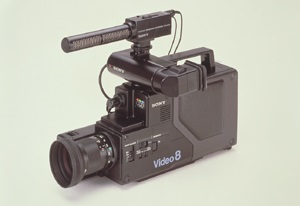
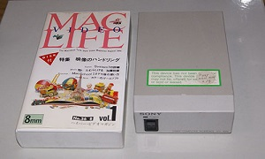
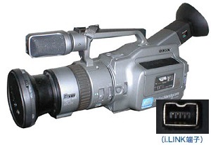
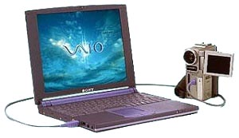
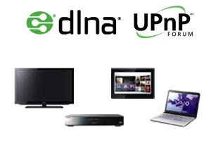

|  |
ソニーで最初に作ったのは８ｍｍビデオのビデオカメラでした。
機械工学のエンジニアとして就職したのでＶＴＲの回転ヘッドの設計などを
担当していました。
|
|
1986年から87年年までアメリカカリフォルニア州のスタンフォード大学
に留学していました。
|
|  |
これはビデオテープレコーダーをパソコンから制御するための
Ｖｂｏｘという商品です。パソコンのＲＳ２３２Ｃ端子と
ビデオテープレコーダーのＬＡＮＣという制御端子を変換する
ための箱です。Ｍａｃ用の雑誌ＭａｃＬｉｆｅと連携して
ビデオマガジンを作ったりしました。
|
|  |
デジタル方式のＤＶビデオカメラ開発に合せて、デジタルビデオのＤＶ信号と
ビデオカメラの制御を行うこともでき、パソコンとの親和性もよいIEEE 1394
(i.LINK)をApple compunter, Texus Insturumentsなどと共同で開発しました。
(AppleではFirewireと呼んでいます)
|
|  |
引き続きIEEE 1394(i.LINK)のWindows 95用のドライバーの開発をしました。
これはVAIO コンピューターに乗りました。
この開発はアメリカのサンノゼに赴任してMicrosoft等との共同で行いました。
|
|  |
IntelやPanasonic, 東芝など多くの会社と共同で
IPベースのホームネットワークのUPnPとDLNAの標準化と開発を行いました。
|